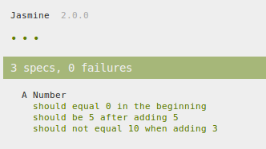

.png)

But How Do I Test, Really?!?!
A definition and functional description of how to get started testing in Modern Javascript.
Why don't you test?
Reasons people give
- "I have legacy code."
- "I don't have the time."
- "My boss isn't into it."
- "I know my code works."
- "I don't see the point."
Reasons people don't give
(but are more true)
- "I don't know how."
- "I don't know how to get started."
Javascript and Testing
(Before)
- JS is horrible for testing
- Different browsers => Different tests
- Internet Explorer!
Javascript and Testing
(Now)
- Major Backlash
- Frameworks and languages meant JUST for JS
- YOU CAN TEST INTERNET EXPLORER!!!
Where do I start??
What does this mean??
Words we have heard
- Jasmine
- Karma
- Testacular
- Spec
- Test Runner
- Test Framework
- Test Driven Development (TDD)
- Behavior Driven Development (BDD)
Test Driven Development
- Boss gives you list of requirements => Spec
- Write Spec in language of tests => Test Suite
- Write Code to pass tests
- Tidy up code to make it more efficient
Behavior Driven Development
- Boss gives you list of requirements => Spec
- Write Spec in language of tests => Test Suite
- Consider how a user would mess things up
- Write Code to pass tests and make users happy
- Tidy up code to make it more efficient
Let's Put it Together
None.js - Platform
Jasmine - Test Framework
var Calc = function(start) {
this.total = start || 0;
this.equals = function() { /* ... */ };
this.clear = function() { /* ... */ };
this.add = function() { /*... */ };
this.subtract = function() { /*... */ };
this.multiply = function() { /*... */ };
this.divide = function() { /*... */ };
this.less = this.minus = this.subtract;
this.greaterThan = this.plus = this.add;
this.and = this.by = this.times = this.multiply;
this.over = this.dividedBy = this.divide;
};
Do I need all this extra crap??
I just want to test!
Do I need Jasmin?!?
NO!
but...
- It is the best way to write you tests QUICK
- Best way to have UNDERSTANDABLE failure messages
Do I need Karma?!?
NO!
but...
- Simplest answer to "When do I test my code?"
- The Answer is ALWAYS
- Simplest answer to "What browsers/platforms do I test on?"
- The Answer is ALL/MOST OF THEM
Do I need Node.js?!?
NO!
but...
- Karma runs on Node.js
- You don't need to know Node.js
- Just install and configure Karma
- Nothing to it.
- Plus, it is AWESOME
Moral of the section?
Use Node.js, Karma, and Jasmine
Save yourself the headache
Let's examine the building blocks
var Calc = function(start) {
this.total = start || 0;
this.equals = function() { /* ... */ };
this.clear = function() { /* ... */ };
this.add = function() { /*... */ };
this.subtract = function() { /*... */ };
this.multiply = function() { /*... */ };
this.divide = function() { /*... */ };
this.less = this.minus = this.subtract;
this.greaterThan = this.plus = this.add;
this.and = this.by = this.times = this.multiply;
this.over = this.dividedBy = this.divide;
};
Example of running the Calc
var calcA = new Calc(5)
.plus(6).greaterThan(10).add(1, 3)
.less(10).minus(1, 2)
.by(30).and(10)
.over(3).dividedBy(16);
console.log(calcA.equals()); // equals 75
Where is the error?
Calc definition or usage of Calc
var calcA = new Calc(5)
.plus(6).greaterThan(10).add([1, 3])
.less(10).minus([1, 2])
.by(30).and(10)
.over(3).dividedBy(16);
console.log(calcA.equals()); // equals NaN
If we had a test ...
We would be more secure in our answer
Our first test!!
Enter Jasmine
How spec-writing is made simple
Describe() It()
describe('A Number', function(){
var number = 0;
it('should equal 0 in the beginning', function(){
expect(number).toEqual(0);
});
it('should be 5 after adding 5', function(){
expect(number + 5).toEqual(5);
});
it('should not equal 10 when adding 3', function(){
expect(number + 3).not.toEqual(10);
});
//it('should equal 10 when adding 3', function(){
// expect(number + 3).toEqual(10); // This will fail
//});
});
Jasmine test Passing
Jasmine test failing
Make a spec for our Calc
Our Spec
- A Calc should add 2 numbers
- A Calc should subtract 2 numbers
- A Calc should multiply 2 numbers
- A Calc should divide 2 numbers
- A Calc should accept multiple args
Our Calc Tests
describe('A Calc', function(){
var calc;
beforeEach(function(){
calc = new Calc(0);
});
it('should add 2 numbers', function(){
expect(calc.plus(2).plus(10).equals()).toEqual(12);
});
it('should subtract 2 numbers', function(){
expect(calc.plus(2).minus(10).equals()).toEqual(-8);
});
it('should multiply 2 numbers', function(){
expect(calc.plus(2).times(10).equals()).toEqual(20);
});
it('should divide 2 numbers', function(){
expect(calc.plus(2).over(10).equals()).toEqual(0.2);
});
it('should accept multiple args', function(){
expect(calc.plus(2, 10).equals()).toEqual(12);
});
});
It Passed!!
To run this
That is it!!
Who needs Karma!
Jasmine - Test Framework
var Calc = function(start) {
this.total = start || 0;
this.equals = function() { /* ... */ };
this.clear = function() { /* ... */ };
this.add = function() { /*... */ };
this.subtract = function() { /*... */ };
this.multiply = function() { /*... */ };
this.divide = function() { /*... */ };
this.less = this.minus = this.subtract;
this.greaterThan = this.plus = this.add;
this.and = this.by = this.times = this.multiply;
this.over = this.dividedBy = this.divide;
};
But does my code work in...
Internet Explorer?!?
(dum dum DUUMM!)
How to test for IE
- Go to IE and run code,
- Look for red or green
- This takes time
- What about other browsers?
- What if I forget to run it in IE?
Karma's Selling Points
-
Easy setup to test against:
- Multiple Browsers
- w/ Multiple Versions
- w/ Multiple Configs
- Tests can run in Shell or Server somewhere
-
Has plugins for most common systems including:
- Require.js
- Grunt
- Gulp
- AngularJS
- While easy to set up also has EXTENSIVE advanced setup
How to setup
- Install Node.js and NPM :: Nodejs.org
- Install Karma
- Initialize Karma
(After Node.js and NPM Install)
$ npm install karma --save-dev
$ npm install karma-jasmine karma-chrome-launcher --save-dev
$ ./node_modules/karma/bin/karma start
INFO [karma]: Karma v0.12.3 server started at http://localhost:9876/
$ npm install -g karma-cli
Configuration
$ karma init my.conf.js
Which testing framework do you want to use ?
Press tab to list possible options. Enter to move to the next question.
> jasmine
Do you want to use Require.js ?
This will add Require.js plugin.
Press tab to list possible options. Enter to move to the next question.
> no
Do you want to capture a browser automatically ?
Press tab to list possible options.
Enter empty string to move to the next question.
> Chrome
> Firefox
>
What is the location of your source and test files ?
You can use glob patterns, eg. "js/*.js" or "test/**/*Spec.js".
Enter empty string to move to the next question.
> *.js
> test/**/*.js
>
Should any of the files included by the previous patterns be excluded ?
You can use glob patterns, eg. "**/*.swp".
Enter empty string to move to the next question.
>
Do you want Karma to watch all the files and run the tests on change ?
Press tab to list possible options.
> yes
Config file generated at "/Users/vojta/Code/karma/my.conf.js".
$ karma start my.conf.js
Start Karma with Watchers On
Added New Tests and Saved
describe('A Calc', function(){
var calc;
beforeEach(function(){
calc = new Calc(0);
});
/* ... Previous Tests ... */
it('should res-et back to 0 when res-et', function(){
expect(calc.plus(1,2,3).times(10).clear().equals()).toEqual(0);
});
it('should set the total to any number with set()', function(){
expect(calc.set(100).equals()).toEqual(100);
});
});
Added New Tests and Saved (cont.)
Added set() function to pass test
None.js - Platform
Jasmine - Test Framework
var Calc = function(start) {
this.total = start || 0;
this.equals = function() { /* ... */ };
this.clear = function() { /* ... */ };
this.set = function() { /* ... */ };
this.add = function() { /*... */ };
this.subtract = function() { /*... */ };
this.multiply = function() { /*... */ };
this.divide = function() { /*... */ };
this.less = this.minus = this.subtract;
this.greaterThan = this.plus = this.add;
this.and = this.by = this.times = this.multiply;
this.over = this.dividedBy = this.divide;
};
Quick Review on TDD
(Test Driven Development)
- Talk to Boss -> Get Spec
- Convert Spec to Test Suite
- See Tests Fail (red all over)
- Write code to pass tests
- See Tests Pass (green all over)
- Tidy up and make more efficient
- Check for failures
Downsides to TDD
Writing Code just to pass tests
!== Good Code
!== User Friendly
Enter BDD
(Behavior Driven Development)
Modifications to TDD
- Consider the User above all else
- Consider how code SHOULD be; not JUST to pass tests
- Remember to write tests that help the user
Overall: Remember the user is not a computer
What's Next?
- WebStorm Integration for Karma
:: Youtube Video from Karma Homepage - Git pre-commit-hook
:: Check tests BEFORE successful commit - Add Angular Integration for Karma and Jasmin
:: Year of Moo article on Karma and AngularJS